CONFIGURACIÓN DE ENTORNO DE DESARROLLO Y PRUEBA LOCAL EN UBUNTU SERVER
Ubuntu server
Ubuntu Server es un Sistema Operativo sin entorno gráfico (aunque podemos instalarlo) lo que quiere decir que todas las acciones se realizan mediante consola, y normalmente ni si quiera a través de el propio servidor, sino desde una conexión remota. El manejo de Ubuntu Server es muy similar al de cualquier otro Sistema Linux, pero con las particularidades de Ubuntu (como el sudo).
En este manual voy a mostrar el procedimiento para configurar el entorno de una aplicación web, creada en Windows, en Ubuntu Server usando las siguientes herramientas:
Apache
Apache es la aplicación de servidor web que procesa y entrega el contenido web a un ordenador. Apache es el servidor web más popular en internet, haciendo funcionar casi el 54% de todas las páginas web.
MySQL
Cada aplicación web, ya sea simple o compleja, requiere una base de datos para almacenar los datos que recoge. MySQL, que es de código abierto, es el sistema gestor de base de datos más popular. Alimenta desde websites de aficionados hasta plataformas profesionales como WordPress. Puede aprender cómo dominar PHP con este curso xxx.
PHP
PHP son las siglas de Preprocesador de Hipertexto. Es un lenguaje de script del lado del servidor que hace funcionar algunas de las páginas web más famosas del mundo, incluyendo WordPress y Facebook. Es de código abierto, relativamente fácil de aprender, y funciona perfectamente con MySQL, lo que lo ha hecho una opción muy popular para los desarrolladores web.
Instalación de paquetes
Para que sea posible llevar a cabo la configuración de la aplicación web, se debe instalar Apache, MySQL y PHP. Para eso, primero es necesario asegurarnos de que los paquetes estén actualizados utilizando los comandos:
- sudo apt update
actualiza la lista de paquetes disponibles y sus versiones, pero no instala o actualiza ningún paquete. Esta lista la coge de los servidores con repositorios que tenemos definidos en el sources.list.
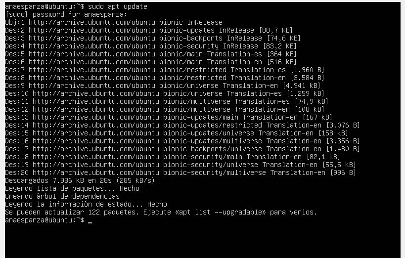
- sudo apt upgrade
una vez el comando anterior ha descargado la lista de software disponible y la versión en la que se encuentra, podemos actualizar dichos paquetes usando este comando. Instalará las nuevas versiones respetando la configuración del software cuando sea posible.

Para continuar, presionar la tecla "S" (mayúscula).
Lo siguiente es descargar las aplicaciones usando el comando " sudo apt install " como se muestra a continuación:
Ahora hay que iniciar las aplicaciones que se acaban de instalar con el comando sudo service ____ start
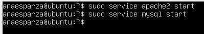
Para comprobar que todos los servicios estén iniciados, se debe escribir el comando service --status all | grep _____
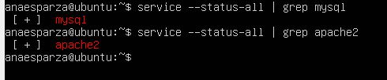
Para comprobar que Apache está corriendo y funcionando como debe ser, se necesita:
- Escribir el comando ifconfig para ver la información de las redes.

- Escribir en el navegador de la máquina anfitrión, la dirección IP que da el adaptador de red sólo-anfitrión (enp0s8)
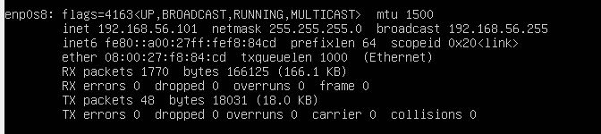
Y en el navegador debe aparecer esto:
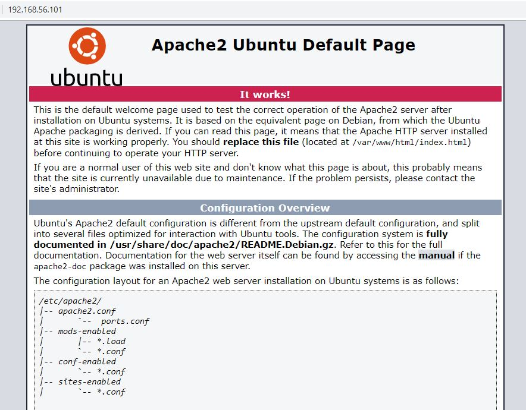
Descargar la aplicación a través de git
Para descargar la aplicación web, se pondrá en uso un repositorio existente en git, en el cual están todos los archivos necesarios. Primero es necesario cambiar de directorios a la carpeta html usando cd /var/www/html. Después, para clonar el repositorio de git, se usará el comando sudo git clone

Es necesario que se puedan hacer los cambios necesarios y guardalos. Por ejemplo, para poder conectar y ejecutar mysql, se tienen que seguir los siguientes pasos:
- Por comodidad y accesibilidad, cambiar el nombre de la carpeta con sudo mv
- Después, cambiarse a la carpeta db de library.com con cd
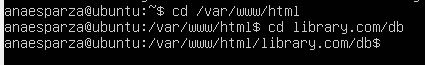
- Después, usar el comando sudo nano library.sql para poder editar el archivo
- Debajo de la línea CREATE DATABASE library;, agregar la línea USE library;
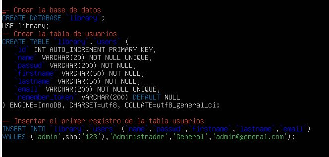
- Presionar las teclas Ctrl + O (para guardar), dar enter y luego presionar Ctrl + X (para salir del editor.)
- Escribir cat library para salir de nano.
- Usar sudo -i para estar en modo usuario root.
- Ya en modo root, el símbolo $ se cambiará por #. Escribir mysql para entrar al monitor de mysql
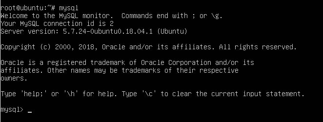
- Dentro de mysql, usaremos source para importar la base de datos a Ubuntu y usarla de manera local y le ponemos la dirección de la base de datos como fuente.
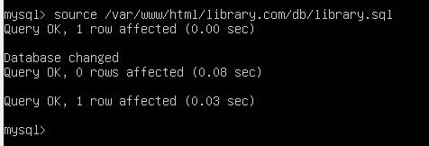
- Ver las bases de datos que existen con show databases; para agurarnos que library está entre ellas.
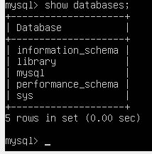
- Ver los usuarios que existen en mysql
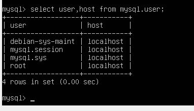
- Crear un usuario para conectarse al localhost
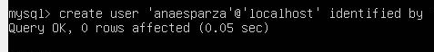
- Conceder al usuario poder hacer uso de la base de datos.
- Con exit salir de mysql y del modo usuario root
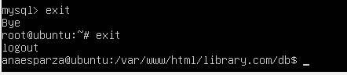
- Probar que el usuario si esté conectado a mysql

También se deben hacer los cambios necesarios en los otros archivos, por ejemplo en conexion.php:
- cd /var/www/html/classes
- cd conexion.php
- ll
- sudo nano conexion.php
- Cambiar los datos de username y password en la clase conexion.php para que concuerden con los del usuario mysql recién creado.

Para hacer la prueba de que la aplicación esté bien configurada hasta el momento, escrbir la IP de la red solo-anfitrión como se hizo anteriormente y agregarle library.com
 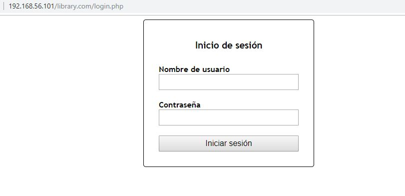
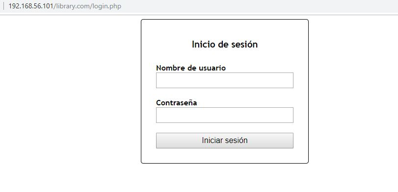
Configuración de VirtualHost de Apache
El servidor web de Apache es uno de los más populares para proveer contenido web en Internet. Cuenta con más de la mitad de todos los sitios web activos en la red y es extremadamente poderoso y flexible.
Apache divide su funcionalidad y componentes en unidades independientes que pueden ser configuradas independientemente. La unidad básica que describe un sitio individial o el dominio llamado virtual host.
Estas asignaciones permiten al administrador utilizar un servidor para alojar varios dominios o sitios en una simple interface o IP utilizando un mecanismo de coincidencias. Esto es relevante para cualquiera que busque alojamiento para más de un sitio en un solo VPS.
Cada dominio que es configurado apuntará al visitante a una carpeta específica que contiene la información del sitio, nunca indicará que el mismo servidor es responsable de otros sitios. Este esquema es expandible sin limites de software tanto como el servidor pueda soportar la carga.
- Ir a la carpeta sites-available de apache y abrir el archivo library.com.conf para configurarlo.
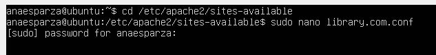
- Dentro de el archivo, escribir las siguientes líneas, que serán las que configurarán el VirtualHost:
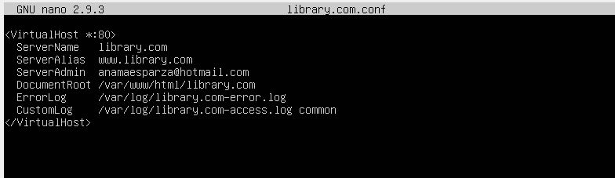
- Presiona Ctrl + O para guardar y luego Ctrl + X para salir de nano.
- Para hacer disponible library.com, escribir el comando sudo a2ensite library.com
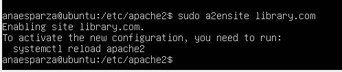
- Como lo requiere la validación, con sudo service apache2 restart, reiniciar el servicio de apache.
Configuración del DNS local de Ubuntu
Escribir sudo nano /etc/hosts para entrar al archivo hosts para editarlo y configurarle de tal manera que la IP de nuestra máquina local (127.0.0.1) esté conectada a library.com:
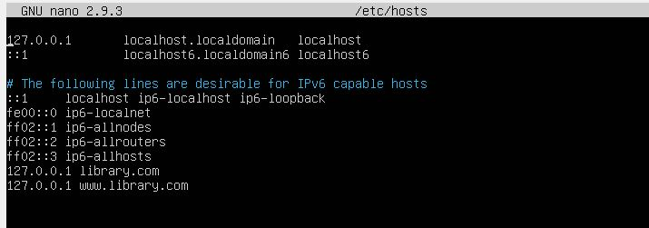
Presiona Ctrl + O para guardar y luego Ctrl + X para salir de nano.
Configuración del DNS local de Windows
- Para finalizar, entrar al archivo hosts de Windows (c:\windows\system32\drivers\etc\hosts) con el bloc de notas ejecutándose como administrador.
- Editar el archivo, escribiendo al final de éste, la IP de la red sólo-anfitrión de Ubuntu conectado a library.com:
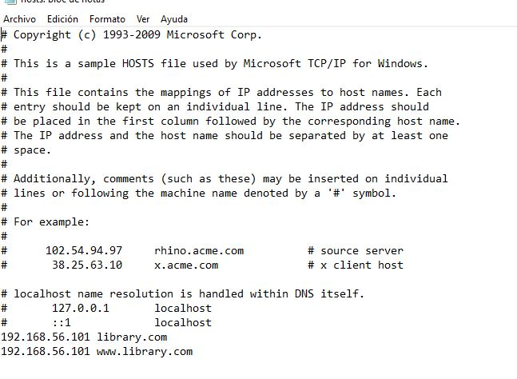
Para probar que todo está bien configurado y está funcionando, entrar al navegador y escribir el dominio library.com.
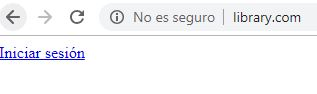
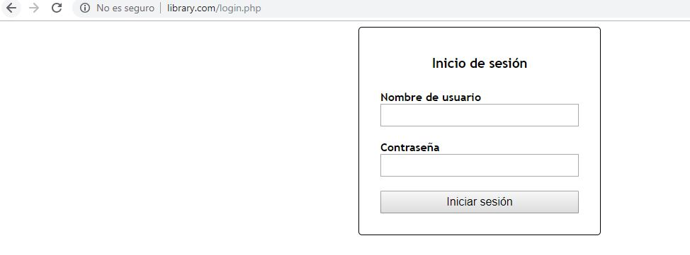
Como la página web sí aparece, la aplicación está configurada correctamente.